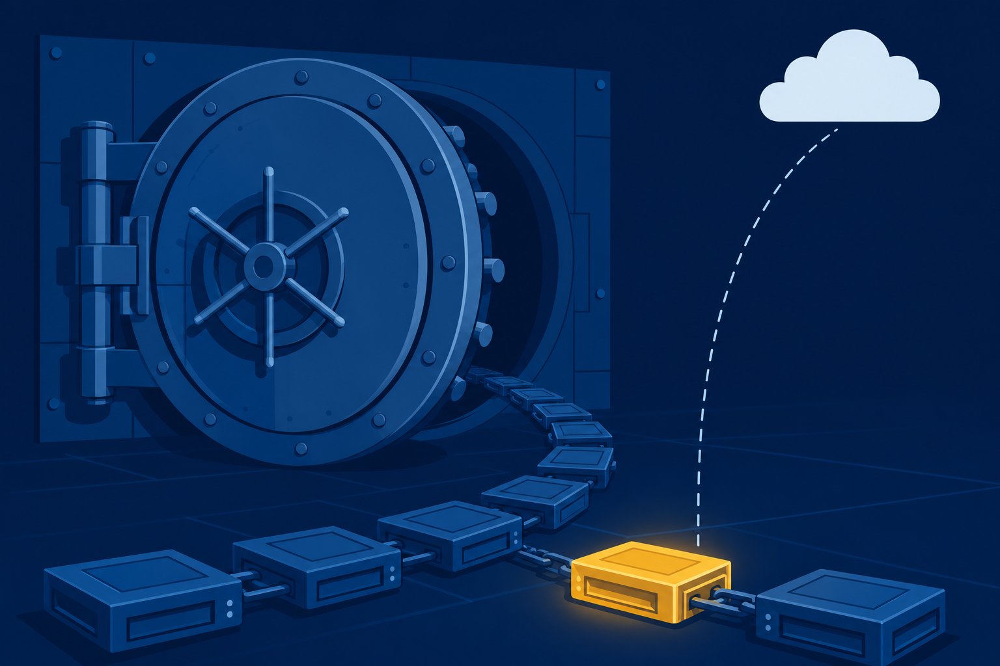

01
Implement
backup and recovery: the chains, the media, and the 3-2-1 rule.

Backup chains, regulated data, and the AI rules: the procedures that keep a department’s data safe, lawful, and recoverable.
Start here: Think of a file you lost and never got back. What would it have taken to save it?
backup and recovery: the chains, the media, and the 3-2-1 rule.
regulated data lawfully, from classification to certified destruction.
AI use against policy: what it does well and where it fails.
One department share rides the whole class. An employee deleted a file this morning, and the office needs it back before payday.
No panic yet. Chains first.
One scheme from the source: hourly snapshots of the VMs, weekly backups of the data files.
Synthetic full: the incrementals append to the end of the original full. One full on the first of the month at 7:00 a.m., then incrementals every 3 hours.
Whatever you save at 2:00 a.m. you pay back on restore day. Pick the trade before the crisis picks it for you.
With a partner: List the backup files you need, in restore order. Count them before you commit.
The live share itself counts.
HRFILESStored on site. A second media type.
Offline and offsite.
↗OffsiteMedia reuse runs on the Grandfather-Father-Son rotation, and the on-site or off-site call decides what survives the building.
The check paid off: File History had been running all along. payroll.xlsx is back in place and opens clean because someone tested the chain before the crisis.
Identifies a person.
US Privacy Act · GDPRSocial Security, passport, driver’s license.
Identity documentsProtected health records.
HIPAA · USCredit and bank card data.
PCI-DSSHRFILES holds employee records. That is PII, so the law reads over your shoulder.
A data breach. A system outage.
Standard procedures and policy, written before trouble.
CIRT, CERT, or CSERT: named responders for each situation.
The plan exists before the breach does. Responding is following, not improvising.
The paper that proves the data is gone.
Degaussing erases HDDs and magnetic tape. It does nothing to SSDs or optical media.
With a partner: Decide whether the plan works. If it fails, name a method that does, and the paper you keep.
Corporate data
Restricts what corporate data reaches even authorized AI integrations.
Sole use of the organization, for business purposes.
Open to anyone: ChatGPT, Gemini, and Bard.
Policy also holds the bigger switch: an organization may permit AI use, shape it, or ban it outright.
You verified a backup today. Verify the answer too.
With a partner: Name the AI limitation behind the first clue, then the policy that answers the second.
The chain brought the file back. The rules kept the data lawful. The policy keeps it away from the wrong models.
One share, one chain, no luck involved.
Incremental and differential: what does each one copy?
Recite the 3-2-1 rule. Where does each copy live?
Why does a degausser skip an SSD, and what works instead?
Next step: Run the CertMaster labs: Back Up the Computer and Restore Data from File History. Module 22 turns to operational procedures: change management, safety, and scripting.